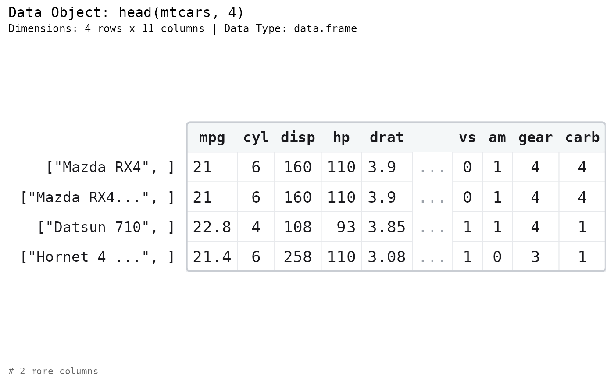
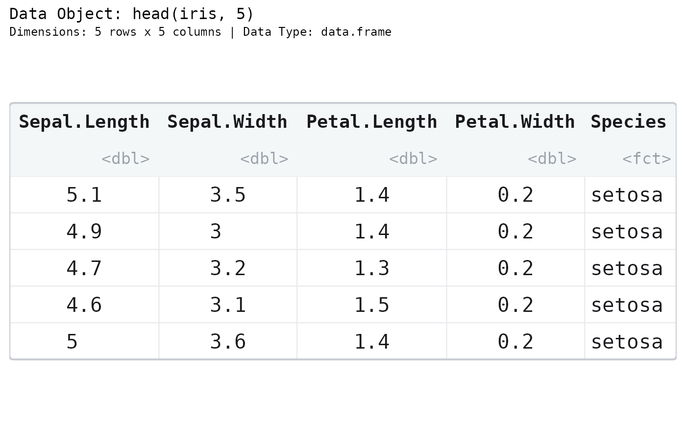
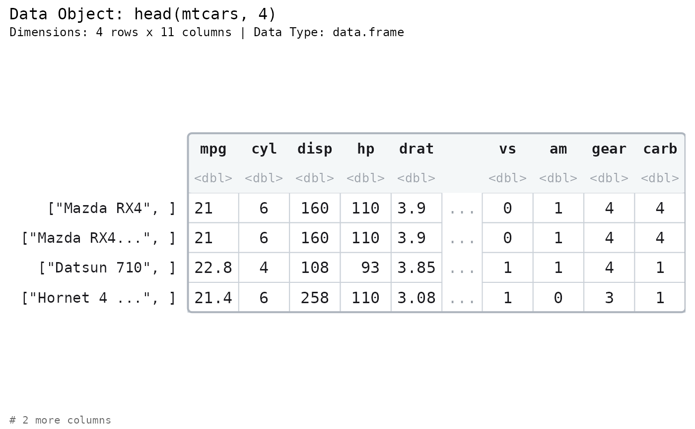
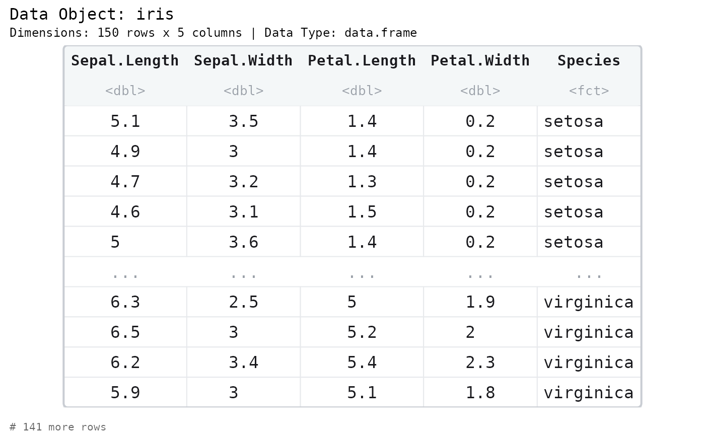
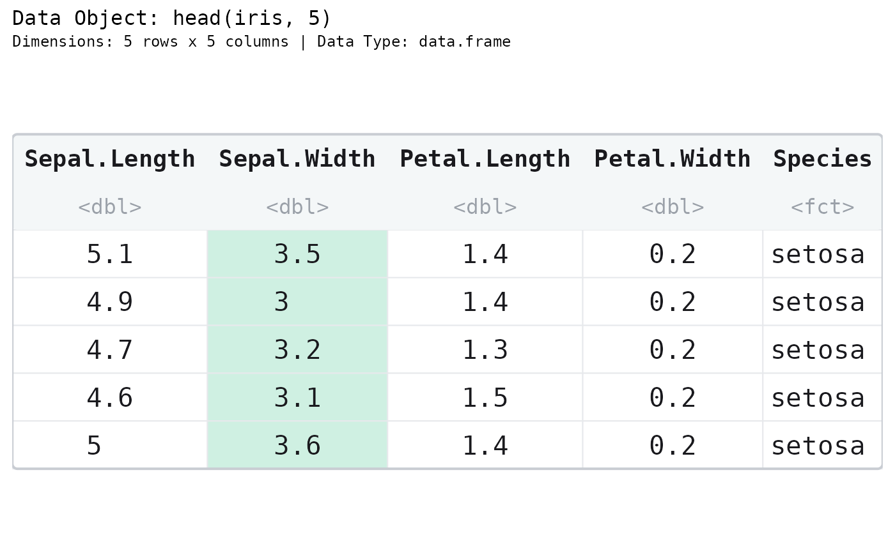
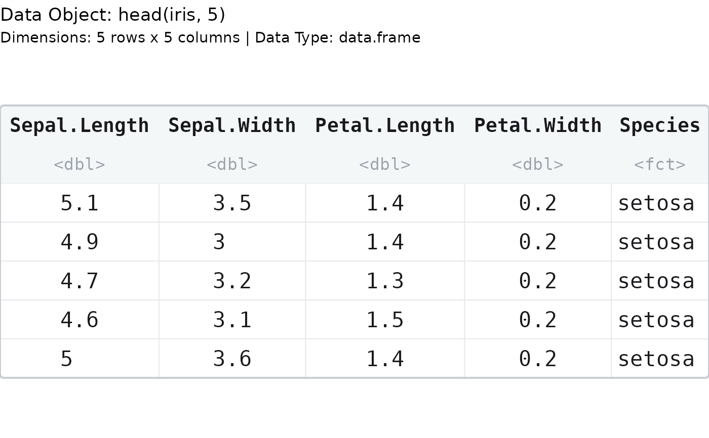
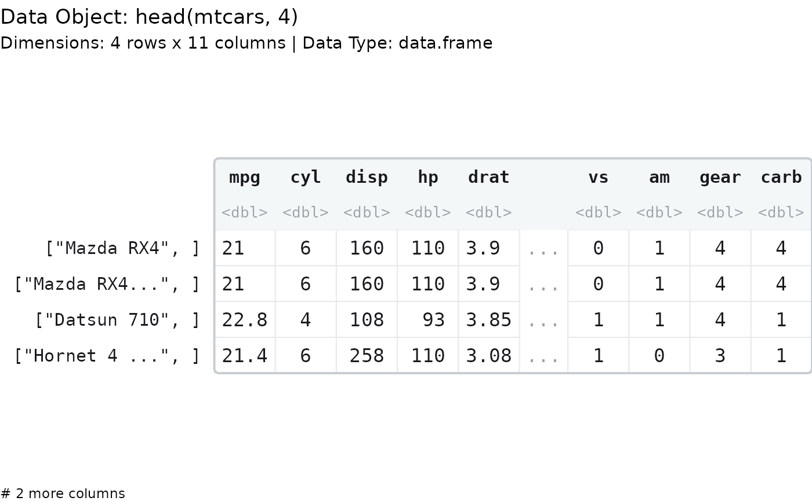

Generate a graph showing the contents of a data frame.
Usage
paint_data_frame(
data,
show_indices = "none",
highlight_area = NULL,
highlight_color = "lemonchiffon",
graph_title = paste0("Data Object: ", deparse(substitute(data))),
graph_subtitle = NULL,
sigfig = 3L,
subtle_digits = c("insignificant", "rounded", "none"),
max_chars = 12L,
max_rows = 10L,
max_cols = 10L,
show_all = FALSE,
fontsize = NULL,
family = "mono",
palette = NULL,
show_types = TRUE,
show_names = TRUE,
show_rownames = NULL,
name_align = c("center", "left", "right"),
type_align = c("center", "left", "right"),
highlight_rows = NULL,
highlight_columns = NULL,
highlight_locations = NULL
)
gpaint_data_frame(
data,
show_indices = "none",
highlight_area = NULL,
highlight_color = "lemonchiffon",
graph_title = paste0("Data Object: ", deparse(substitute(data))),
graph_subtitle = NULL,
sigfig = 3L,
subtle_digits = c("insignificant", "rounded", "none"),
max_chars = 12L,
max_rows = 10L,
max_cols = 10L,
show_all = FALSE,
fontsize = NULL,
family = "mono",
palette = NULL,
show_types = TRUE,
show_names = TRUE,
show_rownames = NULL,
name_align = c("center", "left", "right"),
type_align = c("center", "left", "right"),
highlight_rows = NULL,
highlight_columns = NULL,
highlight_locations = NULL
)
paint_df(
data,
show_indices = "none",
highlight_area = NULL,
highlight_color = "lemonchiffon",
graph_title = paste0("Data Object: ", deparse(substitute(data))),
graph_subtitle = NULL,
sigfig = 3L,
subtle_digits = c("insignificant", "rounded", "none"),
max_chars = 12L,
max_rows = 10L,
max_cols = 10L,
show_all = FALSE,
fontsize = NULL,
family = "mono",
palette = NULL,
show_types = TRUE,
show_names = TRUE,
show_rownames = NULL,
name_align = c("center", "left", "right"),
type_align = c("center", "left", "right"),
highlight_rows = NULL,
highlight_columns = NULL,
highlight_locations = NULL
)
gpaint_df(
data,
show_indices = "none",
highlight_area = NULL,
highlight_color = "lemonchiffon",
graph_title = paste0("Data Object: ", deparse(substitute(data))),
graph_subtitle = NULL,
sigfig = 3L,
subtle_digits = c("insignificant", "rounded", "none"),
max_chars = 12L,
max_rows = 10L,
max_cols = 10L,
show_all = FALSE,
fontsize = NULL,
family = "mono",
palette = NULL,
show_types = TRUE,
show_names = TRUE,
show_rownames = NULL,
name_align = c("center", "left", "right"),
type_align = c("center", "left", "right"),
highlight_rows = NULL,
highlight_columns = NULL,
highlight_locations = NULL
)Arguments
- data
An object that has the class of
data.frame.- show_indices
Display indices based on location. A character vector, so several kinds of index can be asked for at once. Values are:
"none": no indices,"cell": matrix cell indices[i, j],"row": row indices[i, ]to the left of the matrix,"column": column indices[, j]above the matrix, and"all": row, column, and cell indices together. Default:"none".Each value switches on its own lane, so
c("row", "column")draws the row and the column indices but no cell indices, and"all"is the same asc("cell", "row", "column"). Combining"none"with anything else is contradictory, and the other values win:c("none", "row")draws row indices. An unknown value is an error, not a silent no-op.- highlight_area
Logical matrix the same shape as
data, marking the cells to fill. A length-one logical is recycled. Default:NULL, which highlights nothing.- highlight_color
Color to use to fill the background of a cell.
- graph_title
Title to appear in the upper left hand corner of the graph.
- graph_subtitle
Subtitle to appear immediately under the graph title.
NULL(the default) describes the data: its dimensions and its class.NAor""draws no subtitle; any other string is drawn as given. The default reports the dimensions of the data itself, not of the drawing, so an elided matrix still reports all of its rows.- sigfig
Significant digits drawn in black. Digits past the
sigfig-th are drawn in grey; nothing is discarded. Must be in1:15.- subtle_digits
Which digits are drawn grey.
"insignificant"(the default) greys everything past thesigfig-th significant digit;"rounded"greys only digits the rendering actually lost;"none"draws everything black.- max_chars
Strings longer than this are truncated with an ellipsis.
- max_rows, max_cols
Elide the middle of the data frame when it has more rows or columns than this. Default:
10, because a data frame's columns are wide.- show_all
Draw every cell, however small the text becomes. Warns when the text falls below the legibility floor.
- fontsize
Font size in points.
NULL(the default) fits the text to the device.- family
Font family.
"mono"by default.- palette
Colour palette for the drawing. One of
"mint"(the default),"slate","warm", or"classic"(the original look). Defaults to the"paintr.palette"option when unset. A named list of colours is also accepted.- show_types
Draw the type-tag row (
<dbl>,<chr>, ...) under the column names. Default:TRUE.- show_names
Draw the column-name row. Default:
TRUE.- show_rownames
Draw the row names, in a gutter to the left of the frame.
NULL(the default) draws them when the frame has names of its own:mtcarsdoes ("Mazda RX4"), andirisdoes not – a gutter of1, 2, 3is the row's position, not data about it.TRUEdraws whateverrownames()returns;FALSEdraws nothing.The gutter is what teaches the classic confusion: the car's name is not a column of
mtcars, which is whymtcars$nameisNULL.show_indices = "row"wins the same lane, and draws[1, ]instead.- name_align
How the column names sit over their column:
"center"(the default),"left"or"right".- type_align
How the type tags sit over their column:
"center"(the default),"left"or"right". Independent ofname_align.- highlight_rows, highlight_columns, highlight_locations
Shorthand for
highlight_area: instead of building a mask, name the rows, columns, or cell locations to fill and the mask is built for you withhighlight_data(). Sohighlight_rows = 1is exactlyhighlight_area = highlight_rows(data, 1), and the object need not be named twice. Give several at once to fill their union. Supplyinghighlight_areatogether with any of these is an error. Default:NULL.
Value
paint_data_frame() invisibly returns the resolved cell table. See
paint_matrix() for its components.
gpaint_data_frame() returns a ggplot object.
Details
paint_data_frame() draws on the current base graphics device.
gpaint_data_frame() returns a ggplot object. paint_df() and gpaint_df()
are aliases.
Each column is its own formatting unit, because a data frame's columns are
independent variables: a 1e15 in one column will not flip another column into
scientific notation. (A matrix is the opposite – one unit for the whole thing,
so that the same value looks identical in every cell.)
The ggplot object is a shell
gpaint_data_frame() returns a real ggplot object – + theme(), ggsave(),
print() and knitr chunks all work – but its panel is drawn entirely by a
custom grid grob, held in a single annotation_custom() over a meaningless
0..1 coordinate system. There is no aes(), no geom and no scale carrying
any meaning, so:
ggplot_build()sees an empty layer.+ scale_fill_*(),+ scale_x_*()and friends have no effect on the drawing. Usehighlight_areaandhighlight_colorto fill cells.+ geom_point()would draw onto the0..1coordinate system, not onto the cells.
This is not a shortcut around ggplot2. The cell text is fitted to the device at
draw time, which no geom can do, because a layer is built long before the
device size is known; and every number is drawn as two spans in two colors,
which geom_text() cannot do at all. A custom grob is the only mechanism that
can do either.
See also
Other painters:
paint_array(),
paint_list(),
paint_matrix(),
paint_size(),
paint_vector()
Examples
# Base graphics
paint_data_frame(head(iris, 5))
# The type row can be turned off.
paint_data_frame(head(mtcars, 4), show_types = FALSE)

# The two label lanes align independently. The values do not move.
paint_data_frame(head(iris, 5), name_align = "left", type_align = "right")

# A frame with row names of its own draws them in a gutter: the car's name is
# not a column of mtcars, which is why `mtcars$name` is NULL. iris has no such
# names, and draws no gutter -- a lane of 1, 2, 3 is a position, not data.
paint_data_frame(head(mtcars, 4))

# Long frames elide their middle and say so.
paint_data_frame(iris)

# Highlight a column by name.
paint_data_frame(
head(iris, 5),
highlight_area = highlight_columns(head(iris, 5), "Sepal.Width")
)

# ggplot2 graphics ----
gpaint_data_frame(head(iris, 5))

gpaint_df(head(mtcars, 4))
